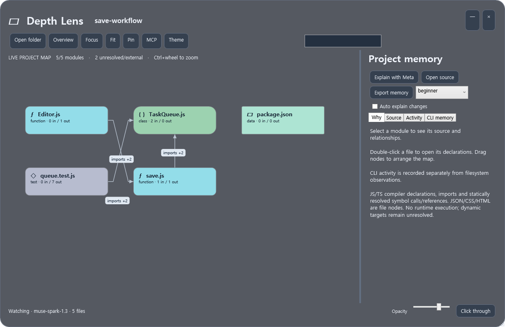
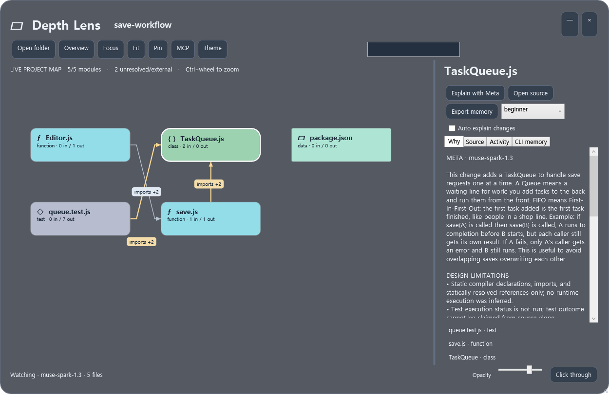
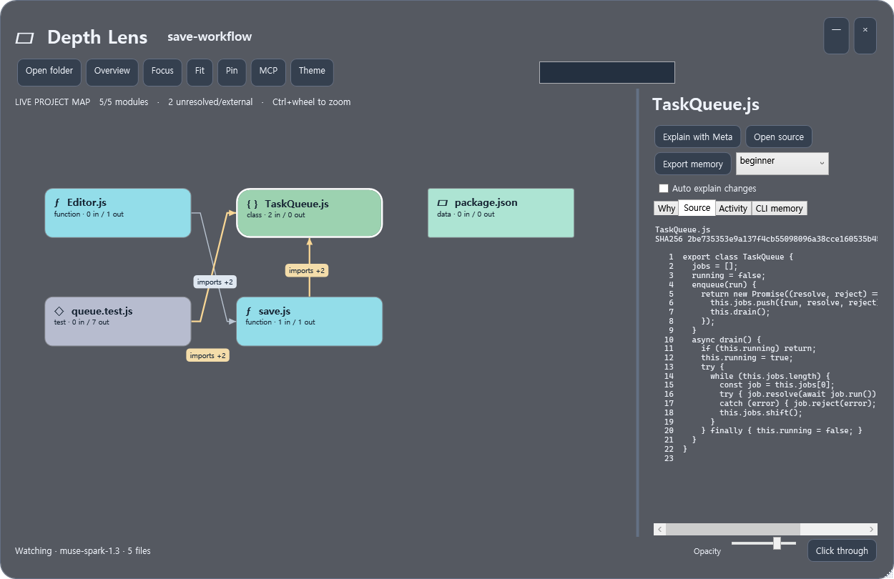
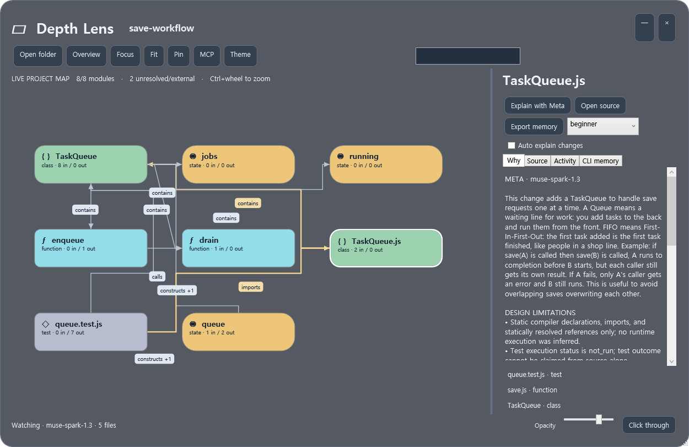
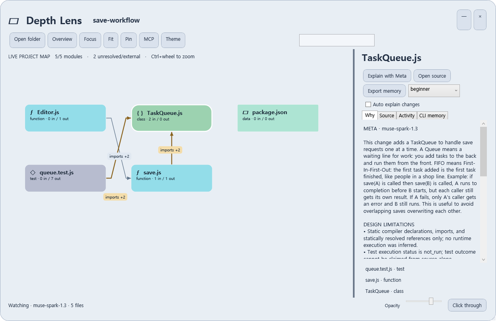
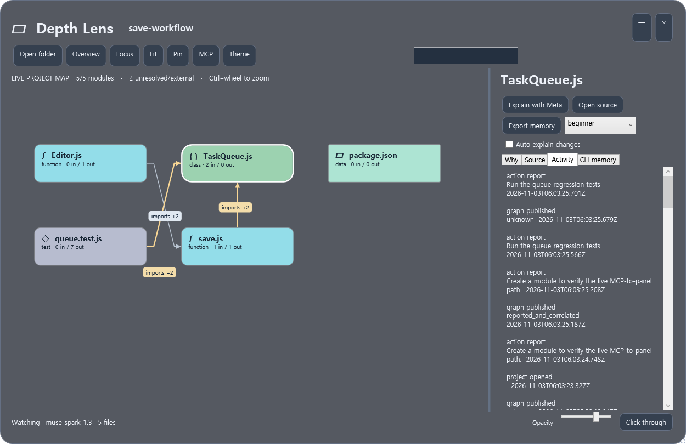

별도 프로젝트 지도만으로는 CLI 옆에서 방금 한 작업을 보여 달라는 요구를 충족하지 못했습니다. 현재 0.2.0의 CLI 동반 패널·실제 검수·남은 범위를 확인하세요. 아래 예전 캡처를 새 창 추적의 증거로 사용하지 않습니다.
Implemented · Windows application · 0.1.0
CLI 작업에서
다음 프로젝트 문맥까지.
실제 폴더 분석 → 변경된 모듈·노드 → 작업 기록 → Meta 설명 → MCP 문맥 조회를 새 Windows 앱으로 연결했습니다.
Depth Lens.exe실행·연결 안내폴더 선택·드롭, JS/TS 선언/의존성 분석, 파일 감시, 단계별 모듈 탐색, 노드 이동·배치 저장, 경로의 카드 회피, 라이트/다크, 배경 투명도·고정·클릭 통과 복구, stdio MCP, CLI 명령 어댑터, 작업 이력, 실제 Meta 설명, 깊이별 설명, JSON/사람용 문서 내보내기, 오래된 설명 제외와 문맥 재사용.
실행 검수
| 검수 종류 | 확인한 결과 |
|---|---|
| 소스·감시·기록·문맥 통합 | 16개 통과. 실제 임시 프로젝트를 생성·수정·이름 변경·삭제하고 재시작 복구 확인. 이 테스트의 Meta는 명시적 fixture |
| 배포 EXE의 실제 stdio MCP | 9개 항목 통과. 별도 프로세스, 도구 목록, resource 구독, 실제 파일 갱신, 작업 귀속, 새 모듈 문맥/원본 조회와 CLI 명령 실행 |
| 실제 예제 코드 실행 | Queue FIFO, 실패 뒤 계속 처리, 작업별 반환값 node:test 3개 통과. 위 CLI 실행 안에서 수행 |
| 실제 Meta API | muse-spark-1.3 연결 응답과 실제 코드 변경 설명을 확인. 생성한 설명의 6개 claim 근거 ID를 검증하고 문맥에서 재조회 |
| 네이티브 화면 | 아래 6장을 직접 검토. 캡처 시 카드 겹침과 연결선의 무관한 카드 통과를 검사. Windows 투명 창 속성, 클릭 통과 style, 단축키 등록·메시지 복구 확인 |
검사 수를 합쳐 전체 기능의 성공률로 표현하지 않습니다. Meta 설명은 실행 검수보다 먼저 생성되었으므로 화면의 “tests not_run”은 그 설명이 생성될 당시의 상태입니다.
실제 앱에서 렌더링한 화면
생성 레퍼런스나 HTML 예제가 아닙니다. 실행 중인 WPF 컨트롤을 RenderTargetBitmap으로 기록한 원본 PNG입니다. OS 바탕화면 합성 캡처와는 구분합니다.












지원 범위와 검수 한계
첫 지원 범위는 Windows와 JS/TS의 정적 관계입니다. 모든 언어/런타임, 탐색기 폴더 진입 자동 감지, 임의 CLI의 모든 도구 호출 자동 수집은 포함하지 않습니다. MCP 도구 보고 또는 동봉한 CLI 어댑터로 작업 목적을 연결하며, 보고 없는 편집도 파일 감시는 수행합니다.
OS 합성 캡처는 현재 실행 환경에서 “잘못된 핸들”로 실패했습니다. 따라서 다른 앱이 패널 뒤로 비치는 실제 데스크톱 장면, 여러 모니터/DPI, 물리 키 입력까지 최종 승인됐다고 주장하지 않습니다. 앱은 .NET 8 Windows Desktop Runtime을 사용하며 현재 컴퓨터의 8.0.25에서 실행했습니다. NuGet 접근 오류로 self-contained 배포 대신 이 실행 가능한 빌드를 제공하며 Node와 TypeScript는 포함했습니다.